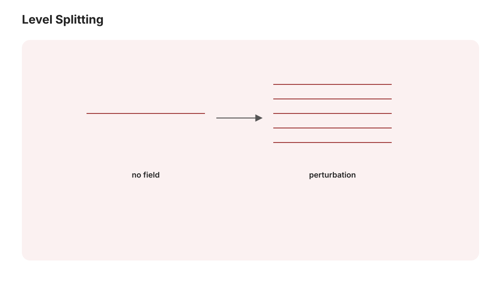

本页目录
量子 IV · 微扰论与近似方法
对标：Griffiths §6–7、§9 ｜ 前置：qm-01–03、高代 V（简并 = 特征值问题） 精确可解的量子系统一只手数得过来——真实物理靠近似。本页配齐三板斧：定态微扰（能级修正的通用公式）、变分法（基态的上界机器）、含时微扰（跃迁与黄金规则）。氢原子的精细结构作为完整战役示范；QED 的若干可观测量可用低阶展开达到极高实验精度，但这不等于微扰级数已被证明收敛。
学习层：小微扰为什么也能造成大修正？
1. 具体谜题：同一个小 \(v\)，为什么一边可靠、一边失效？
考虑两个未耦合基底态 \(\lvert 1\rangle,\lvert 2\rangle\)。它们的能量差由 detuning \(\delta\) 给出，基底之间的耦合是 \(v\)：
现在固定 \(v=0.06\)，把 \(\delta\) 从 \(1.2\) 调到 \(0.12\)。绝对的耦合并没有变，甚至仍然“很小”；可是未耦合能级的谱隙从 \(1.2\) 缩到 \(0.12\)。谜题是：判断微扰是否可靠，究竟应该只看 \(|v|\)，还是要把它与谱隙比较？ 这是一个可以直接对角化的实二能级模型，所以答案能同时由精确谱和近似谱裁决。
2. 先预测：打开实验前写下四个判断
- “小 \(v\) 是否足够？” 对上面的两个 \(\delta\)，哪一个更容易让非简并二阶式失效？只看 \(|v|\) 会得到什么误判？
- “避免交叉的 gap 是多少？” 当 \(\delta=0\) 且 \(v\neq0\) 时，最小能隙是 \(|v|\)、\(2|v|\)，还是仍为零？若 \(v=0\) 呢？
- “一阶修正从哪里来？” 在 \(\delta\neq0\) 的原始基底中，\(v\) 是纯非对角耦合；你预测一阶能量修正是零还是非零？
- “变分值能否越过基态？” 对任意归一化实试探态 \((\cos\phi,\sin\phi)\)，\(E(\phi)\) 能否低于精确基态能量 \(E_0\)？这个结论是否也自动适用于激发态？
先做预测，再点击实验里的揭示门。预测不是记忆测试：每一题都对应模型中的一个可检查量。
3. 最小模型：精确谱、非简并展开与简并处理
精确对角化给出
因此在 \(\delta=0\) 处，避免交叉的最小能隙是 \(2|v|\)；只有 \(v=0\) 时才是真交叉。若 \(\delta\neq0\)，把 \(v\) 当作相对于 \(H_0=\operatorname{diag}(\delta/2,-\delta/2)\) 的非简并微扰：原始基底中 \(\langle1|V|1\rangle=\langle2|V|2\rangle=0\)，所以一阶修正为零；按能量排序后的二阶近似是
真正的展开参数是 \(|v/\delta|\)。当 \(\delta\to0\) 时，分母提醒我们非简并展开失效；此时必须在简并子空间内对角化 \(V\)，得到 \(E_\pm=\pm|v|\)。同一模型因而把“非简并微扰”和“简并微扰”放在一张图上。
4. 动手实验：移动 detuning，同时看能级、混合和变分上界
实验先隐藏答案，完成四个预测后才揭示。揭示后可选四个预设：远离简并、近简并、精确简并、真交叉；也可连续调节 \(\delta\)、\(v\) 与试探角 \(\phi\)。图中实线是精确 \(E_\pm\)，虚线是只在 \(|v/\delta|\) 足够小的区域绘出的二阶近似。数值区显示当前控制参数、二阶误差、精确本征态在两个基底上的概率，以及 \(E(\phi)-E_0\)。
无 JavaScript 时的完整静态读法：模型固定为 \(H(\delta,v)=\left[\begin{smallmatrix}\delta/2&v\\v&-\delta/2\end{smallmatrix}\right]\)。 精确能级是 \(E_\pm=\pm\sqrt{(\delta/2)^2+v^2}\)，能隙为 \(2\sqrt{(\delta/2)^2+v^2}\)；所以 \(\delta=0\) 时 gap 为 \(2|v|\)，\(v=0\) 才是真交叉。
在 \(\delta\neq0\) 且 \(|v/\delta|\ll1\) 时，一阶修正为 \(0\)，二阶排序能级为 \(- |\delta|/2-v^2/|\delta|\) 与 \(+ |\delta|/2+v^2/|\delta|\)。\(\delta=0\) 时这套非简并二阶式没有定义，必须在简并子空间对角化。
| 预设 | \(\delta\) | \(v\) | \(|v/\delta|\) | 精确 \(E_-\) / \(E_+\) | 二阶 \(E_-^{(0+2)}\) / \(E_+^{(0+2)}\) | 精确 gap | |---|---:|---:|---:|---:|---:|---:| | 远离简并 | \(1.20\) | \(0.06\) | \(0.05\) | \(\mp0.602994\) | \(\mp0.603000\) | \(1.205988\) | | 近简并 | \(0.12\) | \(0.06\) | \(0.50\) | \(\mp0.084853\) | \(\mp0.090000\) | \(0.169706\) | | 精确简并 | \(0\) | \(0.12\) | 不定义 | \(\mp0.120000\) | 非简并式失效 | \(0.240000\) | | 真交叉 | \(0\) | \(0\) | 不定义 | \(0\) / \(0\) | 非简并式失效 | \(0\) |
精确基态在 \(\lvert1\rangle,\lvert2\rangle\) 上的概率可写成
激发态把减号换成加号。精确简并处两态各为 \(1/2\) 的显示是对称基底选择；完全零矩阵 \(\delta=v=0\) 时本征基本来就不唯一。
对任意归一化实态 \((\cos\phi,\sin\phi)\)，
这个上界只针对基态，并不把激发态也变成“变分下界/上界”的同一句话。
5. 边界 / 误区：三种方法各自负责什么？
- 非简并定态微扰：先有非零谱隙，再把 \(|v/\delta|\) 当小参数；一阶和二阶式是渐近近似，不是所有 detuning 上的精确公式。
- 简并微扰：\(\delta=0\) 时先在简并子空间对角化 \(V\)；这里正是把 \(\begin{pmatrix}0&v\\v&0\end{pmatrix}\) 对角化，得到 \(\pm|v|\)。
- 变分法：试探态必须归一化，期望值给的是精确基态能量的上界；没有额外的正交约束或激发态变分原理时，不对激发态作同样断言。
- 不要把 \(|v|\) 单独当作可靠性指标：相同的小 \(v\) 在大 detuning 时可能很准，在近简并时却可能造成明显混合和误差。\(v\) 的符号会改变本征向量相对符号和试探角位置，但不改变能级与能隙。
- 不要把 avoided crossing 当成真交叉：\(v\neq0\) 时 gap 不会闭合；\(v=0\) 才允许两条排序能级相交。
6. 回到公式：二阶分母如何预告这张图？
对离散、非简并的基态，在微扰矩阵元和求和定义域满足二阶公式的适用条件、且其余离散能级严格高于基态时，
是非正的；有非零耦合项时才为负。连续谱、简并、未定义或不收敛的求和需要另外的谱论/正则化处理，不能把“基态二阶恒负”当成无条件定律。在本二能级模型里，\(E_-^{(2)}=-v^2/|\delta|\) 正好显示：谱隙变小时，修正的尺度会被分母放大；精确式则告诉我们这种放大最终由简并对角化接管，而不是无限发散。
7. 迁移问题：把谱隙思维带到别处
若把这个二能级块看成多能级哈密顿量中的一对近邻态，哪些矩阵元和哪些局部谱隙会控制混合？在一维晶格、分子轨道或简并 Zeeman/Stark 子空间中，你会先选择非简并展开，还是先对角化小子空间？最后说明：含时微扰计算跃迁幅度，和这里的定态能级修正共享矩阵元语言，但“跃迁率/黄金规则”不能直接替代本页的静态对角化。

1. 非简并定态微扰
\(\hat H = \hat H_0 + \lambda\hat V\)（\(\hat H_0\) 可解）。按 \(\lambda\) 展开能级与态【推导】（代入本征方程逐阶比对，一阶方程与 \(\langle\psi_n^{(0)}|\) 内积）：
读法：一阶 = 微扰在原态上的平均（最常用的一行）；二阶 = "虚跃迁"求和。对离散、非简并且二阶求和/定义域满足公式适用条件的基态，若其余能级严格高于基态，则各分母为负，因此二阶修正非正；有非零耦合项时才为负。连续谱、简并或求和不收敛时需另行处理。分母 \(E_n - E_m\) 警告：能级接近时微扰论可能失效——简并情形另立规矩：
简并微扰：在简并子空间内对角化 \(\hat V\)（高代 V 的特征值问题——"好基"由微扰自己挑）：简并被劈开的方式 = \(\hat V\) 在子空间的谱。（Davis–Kahan"谱隙决定向量稳定性"（grad-math ma-01）的物理孪生。）
2. 完整战役：氢原子精细结构【骨架】
裸氢原子（qm-03）之上按能标逐层加修正。前几项可写成有效哈密顿量后做定态微扰；Lamb 位移则来自量子化电磁场中的电子自能、真空极化等辐射修正，不能说成对同一个非相对论哈密顿量“均做一阶微扰”：
| 修正 | 来源 | 量级 |
|---|---|---|
| 相对论动能 \(-\frac{p^4}{8m^3c^2}\) | sr-01 展开的下一项 | 相对 Bohr 能标约 \(\alpha^2 \sim 10^{-4}\) |
| 自旋-轨道耦合 \(\propto\mathbf L\cdot\mathbf S\) | 电子系看核绕行的磁场 | 同阶（合并给精细结构 \(E_{n j}\)） |
| Darwin 项 | Dirac 理论低能展开；只影响有原点概率的态 | 与前两项同属精细结构阶 |
| Lamb 位移 | QED 辐射修正（qft 线） | 相对 Bohr 能标常记为 \(\alpha^3\)；以 \(mc^2\) 计数的常见首项带 \(\alpha^5\)，并有对数与状态依赖 |
| 超精细（21 cm 线！） | 电子-核自旋耦合 | \(10^{-6}\) eV——射电天文的氢原子指纹 |
精细结构常数 \(\alpha = \frac{e^2}{4\pi\varepsilon_0\hbar c} \approx \frac{1}{137}\) 在此登基——电磁相互作用强度的无量纲刻度。在合适的可观测量和重整化约定下，QED 的低阶结果能与实验达到极高精度；其微扰级数通常被视为渐近展开，而不是已证明收敛的幂级数。光谱学精度 = 检验量子理论的天平。
3. 变分法：基态的上界机器
定理【推导】 任意归一化试探态：\(\langle\psi|\hat H|\psi\rangle \geq E_0\)。 证：按本征基展开，\(\langle H\rangle = \sum|c_n|^2E_n \geq E_0\sum|c_n|^2 = E_0\)。\(\blacksquare\)
用法：对归一化试探波函数带参数并求极小——给精确基态能量的上界（错也错得有方向；不自动约束激发态）。氦原子基态：试探"屏蔽核电荷 \(Z_{\text{eff}}\)"的简单族可以给出接近实验的结果，但精度依赖试探族、电子相关性、质量模型和所比较的量，不能把 98% 当普遍保证——多电子原子的第一性计算由此起步。
🔗 现代直系后代：量子化学的 Hartree–Fock/DFT（试探空间 = Slater 行列式/密度泛函）、变分量子本征求解器 VQE（NISQ 量子计算机的主力算法——试探态由量子线路参数化，qi-03 收线）、变分蒙卡与神经网络波函数（mb-01）——"猜参数化家族 + 优化"的哲学与 ML 的变分推断（ELBO）完全同构：变分法是物理与机器学习共享的第一方法论。
4. 含时微扰与黄金规则
含时扰动 \(\hat V(t)\) 驱动跃迁。一阶含时微扰【推导骨架】（相互作用绘景中积分一阶项）：跃迁幅 \(c_f(t) = \frac{1}{i\hbar}\int_0^t\langle f|\hat V(t')|i\rangle e^{i\omega_{fi}t'}dt'\)——扰动的 Fourier 分量在跃迁频率处“共振”才有效（mech-04 共振的量子版）。对弱耦合、足够长的观察时间和近连续末态，在相应归一化与粗粒化条件下得到：
读法：跃迁率 = 耦合强度平方 × 末态“座位数”——光电离、散射和半导体跃迁（solid-02）都使用这套弱耦合语言；选择定则（\(\Delta\ell = \pm1\) 等）来自矩阵元因对称性归零（球谐正交性——对称性决定“什么跃迁被禁止”，aqm-01 Wigner–Eckart 的预告）。自发辐射还必须把电磁场量子化，不能由一个给定的经典周期外场单独推出；在量子场与热平衡账本中，Einstein 系数和 Planck 分布彼此对齐，构成激光原理的一部分。
5. 练习与要点
例 1（一阶微扰热身） 无限深方阱底加小台阶 \(V_0\)（左半）：\(E_n^{(1)} = \langle V\rangle = \frac{V_0}{2}\)（对一切 \(n\)——\(\sin^2\) 的半区间平均）——一行公式的手感题。
例 2（变分法演示） 用三维径向高斯试探 \(e^{-\alpha r^2}\) 变分氢原子（真解是指数型）：优化后得 \(E \approx -11.5\) eV \(>-13.6\) eV，符合上界性质。上界给出了误差方向；若没有独立下界，它本身并不告诉你误差究竟有多小。
例 3（黄金规则量级） 将电磁场量子化后，典型允许的可见光电偶极跃迁寿命常在 ns 数量级，\(\Gamma \propto \omega^3|d|^2\)（偶极矩阵元常取原子尺度 \(ea_0\) 估量）——em-03 Larmor \(P \propto \omega^4\) 的量子对应还需除以单光子能量 \(\hbar\omega\)：经典与量子辐射公式在数量级上握手。禁戒跃迁或异常小矩阵元会有完全不同的寿命。\(\blacksquare\)
量子力学四页完卷（高等量子力学三页在研究生板块：对称性、散射、路径积分）。下一页：近代物理拼图——原子光谱、激光与原子核。